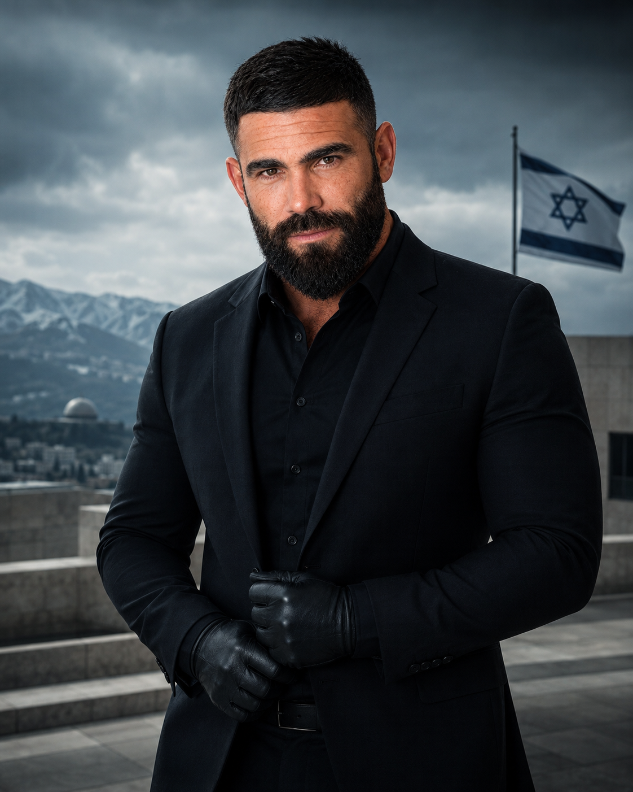
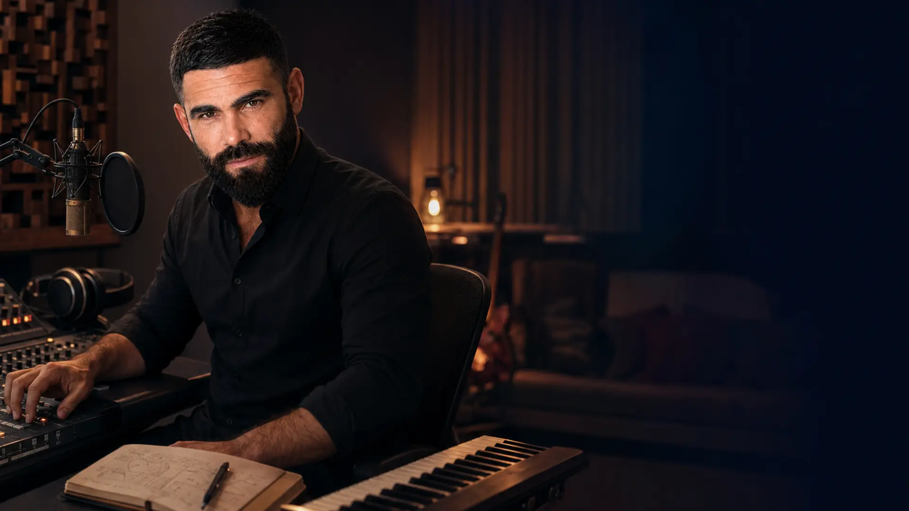

OFFICIAL PUBLIC PROFILE · IGOR VEPRETSKI
איגור
ופרצקי.
הסיפור, הקול הציבורי והעשייה החברתית במקום אחד — לא ביוגרפיה שטוחה, אלא מסלול שמחבר אדם, יצירה, StartOn, מדיה ו־7YA.
STARTONPUBLIC VOICECREATIONDIGITAL IGOR

LIFE · MISSION · VOICE
שלושה פרקים.
אותו אדם.
העשייה החברתית, הנוכחות הציבורית והיצירה לא מופרדות כאן לכרטיסי קורות חיים. הן מוצגות כרצף אחד של התפתחות, אחריות ובנייה.


MUSIC & CLIPS · IGOR / IDO VEPRETSKI
הקול נשאר
בתוך הסיפור.
קליפים, שיתופי פעולה וקטלוג מוזיקלי רשמי — לא כאייקון צדדי, אלא כעוד דרך להכיר את איגור.

OFFICIAL MUSIC & CLIPS
לשמוע ולראות את הצד היצירתי.
סיפורים, שיתופי פעולה וקליפים רשמיים עם קישורים למקורות המקוריים והקרדיט המדויק.
למוזיקה ולקליפים ↗PUBLIC TIMELINE · SOURCE LINKED
לא קורות חיים.
עקבות בזמן.
חמש נקודות ציבוריות שמאפשרות לעבור מהסיפור למקור עצמו. כל תחנה נשארת קשורה לשנה ולפרסום שלה.